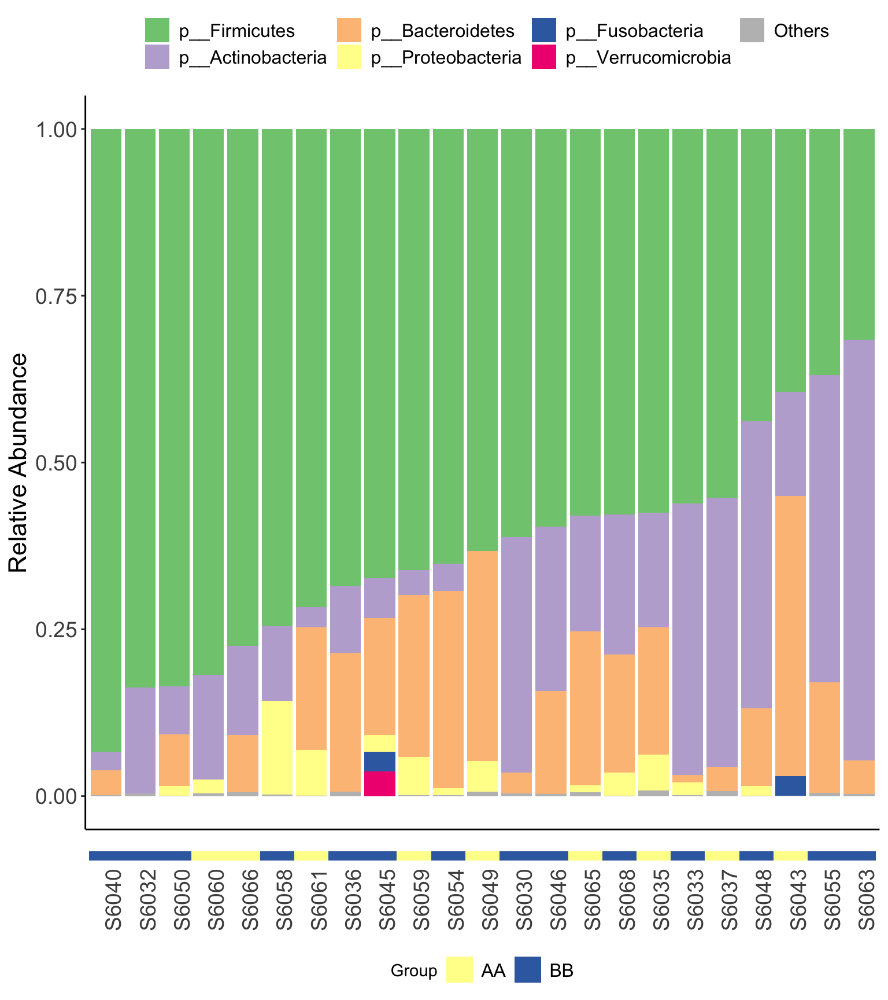

Chapter 5 Diversity analysis
Loading packages
library(XMAS2)
library(dplyr)
library(tibble)
library(phyloseq)
library(ggplot2)5.1 Alpha diveristy
- Calculate the alpha diversity
Notes: the otu table must be counts matrix (rarefied but not trim counts matrix) when you choose Observed etc measures.
dada_ps_rare_genus_alpha <- run_alpha_diversity(ps=dada2_ps_rare_genus, measures = c("Shannon", "Chao1", "Observed"))
print(dada_ps_rare_genus_alpha)## SampleID Group Observed Chao1 se.chao1 Shannon
## 1 S6030 BB 74 74.00000 0.0000000 2.622800
## 2 S6032 BB 38 38.00000 0.0000000 1.711068
## 3 S6033 BB 80 80.16667 0.5431879 2.719495
## 4 S6035 AA 35 35.00000 0.1232013 1.953807
## 5 S6036 BB 95 95.00000 0.0000000 2.942657
## 6 S6037 AA 35 35.00000 0.0000000 1.933007
## 7 S6040 BB 58 58.00000 0.0000000 2.490198
## 8 S6043 AA 65 65.33333 0.9246628 2.098003
## 9 S6045 BB 60 60.00000 0.0000000 2.920363
## 10 S6046 BB 71 71.00000 0.1241166 2.264433
## 11 S6048 BB 66 66.00000 0.0000000 2.630421
## 12 S6049 AA 60 60.00000 0.0000000 2.506885
## 13 S6050 BB 53 53.00000 0.0000000 2.431334
## 14 S6054 BB 84 84.00000 0.0000000 2.769973
## 15 S6055 BB 75 75.00000 0.0000000 2.297388
## 16 S6058 BB 37 37.00000 0.2465985 2.262059
## 17 S6059 AA 71 71.00000 0.0000000 2.682960
## 18 S6060 AA 48 48.00000 0.0000000 1.883809
## 19 S6061 AA 80 80.00000 0.0000000 3.088651
## 20 S6063 BB 38 38.00000 0.0000000 1.543267
## 21 S6065 AA 77 77.00000 0.0000000 2.877568
## 22 S6066 AA 67 67.00000 0.0000000 2.638564
## 23 S6068 BB 40 40.00000 0.0000000 2.100363- visualization
plot_boxplot(data=dada_ps_rare_genus_alpha,
y_index = c("Shannon", "Chao1", "Observed"),
group = "Group",
group_names = c("AA", "BB"),
group_color = c("red", "blue"))

Figure 5.1: Alpha diversity (16s example)
5.2 Beta diversity
- beta dipersion
dada2_ps_beta <- run_beta_diversity(ps=dada2_ps_rare_genus, method = "bray", group = "Group")##
## Permutation test for homogeneity of multivariate dispersions
## Permutation: free
## Number of permutations: 999
##
## Response: Distances
## Df Sum Sq Mean Sq F N.Perm Pr(>F)
## Groups 1 0.017526 0.0175257 2.7119 999 0.109
## Residuals 21 0.135711 0.0064624
##
## Pairwise comparisons:
## (Observed p-value below diagonal, permuted p-value above diagonal)
## AA BB
## AA 0.116
## BB 0.11449dada2_ps_beta$BetaDispersion
Figure 5.2: Beta diversity (16s example)
- beta distance
plot_distance_corrplot(dada2_ps_beta$BetaDistance)Figure 5.3: Beta distance
5.3 Systematic Information
sessionInfo()## R version 4.1.2 (2021-11-01)
## Platform: x86_64-apple-darwin17.0 (64-bit)
## Running under: macOS Monterey 12.2.1
##
## Matrix products: default
## LAPACK: /Library/Frameworks/R.framework/Versions/4.1/Resources/lib/libRlapack.dylib
##
## locale:
## [1] en_US.UTF-8/en_US.UTF-8/en_US.UTF-8/C/en_US.UTF-8/en_US.UTF-8
##
## attached base packages:
## [1] grid stats4 stats graphics grDevices utils datasets methods base
##
## other attached packages:
## [1] magrittr_2.0.2 glue_1.6.2 Gmisc_3.0.0 htmlTable_2.4.0
## [5] Rcpp_1.0.8.2 readxl_1.4.0 SummarizedExperiment_1.24.0 Biobase_2.54.0
## [9] GenomicRanges_1.46.1 GenomeInfoDb_1.30.1 IRanges_2.28.0 S4Vectors_0.32.3
## [13] BiocGenerics_0.40.0 MatrixGenerics_1.6.0 matrixStats_0.61.0 ggpubr_0.4.0
## [17] ggplot2_3.3.5 phyloseq_1.38.0 tibble_3.1.6 dplyr_1.0.8
## [21] XMAS2_2.1.3
##
## loaded via a namespace (and not attached):
## [1] backports_1.4.1 Hmisc_4.6-0 corrplot_0.92 plyr_1.8.6 igraph_1.2.11
## [6] splines_4.1.2 BiocParallel_1.28.3 TH.data_1.1-0 digest_0.6.29 foreach_1.5.2
## [11] htmltools_0.5.2 fansi_1.0.2 checkmate_2.0.0 memoise_2.0.1 cluster_2.1.2
## [16] limma_3.50.1 Biostrings_2.62.0 annotate_1.72.0 sandwich_3.0-1 metagenomeSeq_1.36.0
## [21] jpeg_0.1-9 colorspace_2.0-3 blob_1.2.2 ggrepel_0.9.1 xfun_0.30
## [26] crayon_1.5.0 RCurl_1.98-1.6 jsonlite_1.8.0 libcoin_1.0-9 genefilter_1.76.0
## [31] survival_3.3-1 zoo_1.8-9 iterators_1.0.14 ape_5.6-2 gtable_0.3.0
## [36] zlibbioc_1.40.0 XVector_0.34.0 DelayedArray_0.20.0 car_3.0-12 Rhdf5lib_1.16.0
## [41] shape_1.4.6 abind_1.4-5 scales_1.1.1 mvtnorm_1.1-3 DBI_1.1.2
## [46] edgeR_3.36.0 rstatix_0.7.0 xtable_1.8-4 foreign_0.8-82 bit_4.0.4
## [51] Formula_1.2-4 glmnet_4.1-3 htmlwidgets_1.5.4 httr_1.4.2 gplots_3.1.1
## [56] RColorBrewer_1.1-2 modeltools_0.2-23 ellipsis_0.3.2 pkgconfig_2.0.3 XML_3.99-0.9
## [61] farver_2.1.0 nnet_7.3-17 sass_0.4.0 locfit_1.5-9.5 utf8_1.2.2
## [66] tidyselect_1.1.2 labeling_0.4.2 rlang_1.0.2 reshape2_1.4.4 AnnotationDbi_1.56.2
## [71] munsell_0.5.0 cellranger_1.1.0 tools_4.1.2 cachem_1.0.6 cli_3.2.0
## [76] generics_0.1.2 RSQLite_2.2.10 ade4_1.7-18 broom_0.7.12 evaluate_0.15
## [81] biomformat_1.22.0 stringr_1.4.0 fastmap_1.1.0 yaml_2.3.5 knitr_1.37
## [86] bit64_4.0.5 caTools_1.18.2 forestplot_2.0.1 purrr_0.3.4 KEGGREST_1.34.0
## [91] coin_1.4-2 nlme_3.1-155 compiler_4.1.2 rstudioapi_0.13 png_0.1-7
## [96] ggsignif_0.6.3 geneplotter_1.72.0 bslib_0.3.1 stringi_1.7.6 highr_0.9
## [101] lattice_0.20-45 Matrix_1.4-0 vegan_2.5-7 permute_0.9-7 multtest_2.50.0
## [106] vctrs_0.3.8 pillar_1.7.0 lifecycle_1.0.1 rhdf5filters_1.6.0 jquerylib_0.1.4
## [111] data.table_1.14.2 cowplot_1.1.1 bitops_1.0-7 latticeExtra_0.6-29 R6_2.5.1
## [116] bookdown_0.24 gridExtra_2.3 KernSmooth_2.23-20 codetools_0.2-18 MASS_7.3-55
## [121] gtools_3.9.2 assertthat_0.2.1 Wrench_1.12.0 rhdf5_2.38.1 DESeq2_1.34.0
## [126] withr_2.5.0 multcomp_1.4-18 GenomeInfoDbData_1.2.7 mgcv_1.8-39 parallel_4.1.2
## [131] rpart_4.1.16 tidyr_1.2.0 rmarkdown_2.13 carData_3.0-5 lubridate_1.8.0
## [136] base64enc_0.1-3